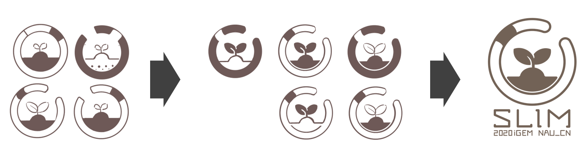

We formed and maintained a meaningful relationship with NJU-CHINA iGEMers, exchanging ideas and shaping our projects in experimental design, modeling, human practices, wiki, art design throughout the season.
We preliminarily determined the direction of our subject and chatted with wet lab members of NJU-CHINA.
Our project was aimed to handle soil heavy metal pollution under the circumstances that current methods, like plant treatment and physicochemical treatment, couldn’t solve the problem completely. To make up for the possible damage to soil caused by current methods, we came up with a new method using synthetic biologyfor restoring soil. We combined earthworms with engineered bacteria as a carrier to secrete phosphate-solubilizing enzyme(PSE) to combine lead into precipitation complex. In this way, the soil could plant while treating heavy metal.
NJU-CHINA members asked us if we had any ideas about the engineered bacteria. We discussed for a while and agreed that our engineered bacteria should be dominant in the environment and have strong secretory ability. The next few weeks, we looked up information in this direction and decided to use Bacillus subtilis because it was gram-positive bacterium as well as the dominant bacteria both in the environment and earthworm intestinal tract. It also had powerful secretory ability that we needed.
We exchanged ideas with NJU-CHINA members about our Bacillus subtilis playing its role of dissolving phosphorus in earthworm intestinal tract.
We hoped our engineered bacteria secrete phosphate-solubilizing enzyme(PSE) and kill itself outside the intestinal tract. NAU-CHINA members asked some questions about intestinal environment of earthworm. Then they considered that our PSE couldn’t work well because nowadays the PSE are mostly acid phosphatase (ACP) and alkaline phosphatase nevertheless the pH of earthworm intestinal tract is form pH6 to Ph7. So, they thought the phosphate-solubilizing efficiency would be very low and recommended us to change enzyme. We took their advice and searched for neutral enzyme. Finally, we found the phytase, phy(ycD).
NJU-CHINA iGEMers advised us to focus on the development of agricultural economy, so we took part in a lecture about agricultural economy and had a conversation with one of the agricultural economists.
We had designed our circuit and explained the mechanism of treating lead pollution to NJU-CHINA team: when earthworm ate the soil, the engineered bacteria secreted enzyme in the intestinal tract and turned phosphorus into phosphate radical to form stable pyromorphite with lead. Then our engineered bacteria started kill switch when they were excreted outside so that no bio-pollution could be caused.
NJU-CHINA members asked us how to ensure adequate contact of the converted phosphate with lead and how to control the combination ratio.
These problems were very important to us. We also thought we needed to take ion productand Ksp of the reaction into account. In the meanwhile, we needed to check the concentration of phosphate, lead ion and chloride ion, which required the relevant information provided by the mathematic model members. With the advice of some professors and our own calculations, we solved the problem by July: we calculated that the ion product of pyromorphite was between 10-20~10-30 and its Ksp is about 10-60~10-80, which was far enough to meet the conditions for precipitation. Therefore, even if other ion existed, pyromorphite would still be generated in priority for its smaller Ksp.
Frist, our team deeply thought about stakeholders and divided them into four categories:
Then we shared our thoughts with NJU iGEMers and had a brainstorm of stakeholders. NJU-CHINA iGEMers got new insight into stakeholders ---- “Make a stakeholders’ circle to tie stakeholders closely ”. After taking their suggestion, we decided to make a “stakeholders’cycle”, that is, "For Health, For Earning".
We started to optimize our circuit, including the optimization of kill switch. We explained to NJU-CHINA how the engineered bacteria secreted phytase in earthworm intestinal tract and committed suicide after excretion of earthworm to prevent bio-pollution.
NJU-CHINA asked us did Bacillus subtilis metabolites have an impact on soil quality or crop production after suicide?
Because the Bacillus subtilis we selected was the dominant bacteriain the soil, earthworm intestinal tract and wormcast, we didn't think that it would affect the soil crops after the engineered bacteria commit suicide.
NJU-CHINA iGEMers publicized the knowledge of synthetic biology to students with the school organization, which had an unexceptionable impact. We took their advice to collaborate with school associations, like NJAU Youth Association. Through online counseling and lectures, we opened the door of synthetic biology to children who might not have learnt that before.
Nanjing-China iGEMers publicize the knowledge of syenthetic biology to students with the school organization, that catched on. They advised us to collaborate with school associations, so we cooperate with NJAU Youth Association. Through online counseling and lectures, we opened the door of synthetic biology to chrildren who might not have learnt that before.
They also helped us figure out that target audience of our children comic was not only kids, but also young parents, educators, and children literature writers. We can also get feedback by distributing comic to these groups of target audience.
We discussed with NJU-CHINA members to improve the circuit, and NJU-CHINA members asked how to control the process of engineered bacteria in laboratory culture without committing suicide.
We had considered this problem before and designed the preliminary circuit. We designed the Toehold Switch. Only when the transcribed Trigger RNA was accumulated in earthworm intestinal tract, the transcribed Switch RNA could be turned on in the aerobic environment and released the suicide gene.
NJU-CHINA members said that although the engineered bacteria couldn’t commit suicide in the lab, continuous transcription of switch RNA was a pressure on them. We took their advice and made adjustments.
We added IPTG induction system to express CⅠ protein and inhibit the transcription of switch RNA in the lab so that there was no extra pressure on engineered bacteria.
Due to the lack of experiments, data acquisition has always been a problem for us, especially data such as DNA transcription rate and mRNA translation rate. Under the recommendation of NJU, we applied De Novo DNA ( https://www.denovodna.com/ ) to calculate relevant data, which improved the accuracy of model data acquisition and laid a foundation for the later model establishment.
We had a communication with NJU-CHINA, and discussed the issue of uploading the code to the official website. The main reason is that NJU-CHINA wants to make vertical layout, and finally add "Vertical- Align: Middle". The problem has been solved and the friendship between the two teams has been promoted on the basis of previous communication.
We exchanged some idea with NJU-China about the design of our logo, and received some helpful suggestions. In the beginning, we designed two logos respectively with the theme of earthworm and engineering bacteria. When we were hesitating to choose one, NJU-CHINA advised that we can choose the logo with soil element, giving that soil element can express the theme of our project——environment protection better.
We designed the earthworm as a ring with a gap, and fill in a little bit black to represents the clitellum of earthworm. NJU-CHINA suggested that we can enhance the balance of design by adjusting the position of the gap and clitellum and the size of bud, and use more arcs to make the image of the earthworm three-dimensional. With the help of NJU-China, we perfected our design of logo, planning to make an animation of logo to emphasize the existence of earthworm.
